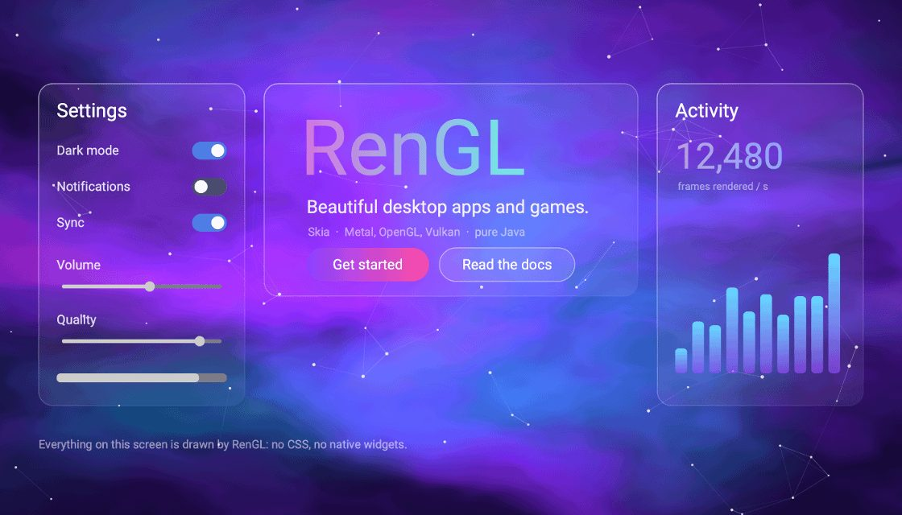
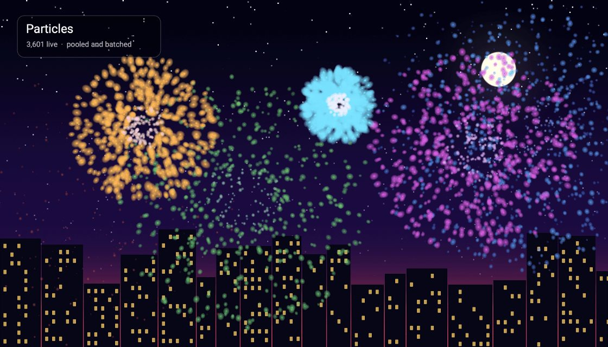
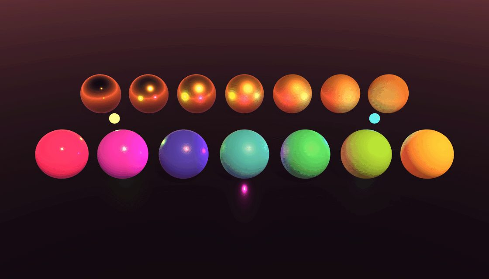

Features
Everything you need to ship a polished app.
Widgets are drawn by RenGL itself, so you control how every pixel looks. Nine areas, one toolkit. Each one links to runnable code on the Code page.
UI toolkit
Every widget is drawn by RenGL, so an app looks the same on macOS, Windows and Linux, and nothing is held back by a native control.
- Text: single-line fields, multi-line areas, a rich text editor and Markdown-formatted text, with offline spell checking.
- Choices: buttons with icons, checkboxes, radio buttons, toggle switches, dropdowns, sliders, spinners, color pickers and date/time pickers.
- Data: sortable, resizable tables, trees, tabs, scroll areas, context menus and tooltips.
- Dialogs: modal containers that block what is under them, and popups that paint over everything.
- Icons: the Feather icon set is bundled, drawn in the label's color.

Key classes
ButtonOverlayTextFieldOverlayTextAreaOverlayRichTextAreaOverlayDropdownOverlaySliderOverlayToggleSwitchOverlayCheckBoxOverlayColorPickerOverlayDateTimePickerOverlayTableViewTreeViewModalContainer
Layouts
A layout is a container that positions its children for you, every frame. They nest freely, so a toolbar inside a column inside a dock is normal.
- Six layouts: vertical, horizontal, grid, stack (layered), flow (wraps) and dock (a header, a sidebar and a content area that fills the rest).
- Sharing space: give children weights or relative sizes and they split what is left as the window is resized.
- Fit to content: a layout can size itself to its children, and elements can be anchored to any corner or the center.
- Panes and tabs: split containers with a draggable divider, and tab containers with closable, scrolling tabs.
- Layouts as data: describe a whole screen in a JSON file and load it with one call.
Key classes
VerticalLayoutHorizontalLayoutGridLayoutStackLayoutFlowLayoutDockLayoutSplitContainerTabContainerAnchorUiFile
Choosing one
A list: vertical. A toolbar: horizontal. Label and field pairs: a two-column grid. A badge on an icon: stack. Chips that wrap: flow. An app shell: dock.
Styling & themes
There is no CSS engine and no native look to fight. Every style is set from Java, and a theme can restyle the whole app while it runs.
- Boxes: backgrounds, borders, corner radii, hover colors and opacity on every element.
- Paints: solid colors, gradients, gradients that slide, and a color-cycling rainbow, for fills and borders alike.
- Themes: light, dark and crimson are built in, or write your own. Anything you set by hand stays pinned when the theme changes.
- Backgrounds: animated dot grids, constellations and electric nodes behind any element or the whole window, and even a live 3D scene.
- Fonts & vectors: custom fonts, and SVGs rendered at any size.
- Shader effects: write an SkSL shader and run everything an element draws through it.
Key classes
StylingColorLinearGradientScrollingGradientRainbowColorThemeManagerDarkThemeLightThemeCrimsonThemeConstellationBackgroundDotGridBackgroundAnimatedDotBackgroundElectricNodeBackgroundShaderEffect
Draggable containers
Containers that behave like little windows inside your window: the user can move them, resize them and rearrange what is in them.
- Dragging: one call turns it on. Keep a panel inside a rectangle, and make it stop flush against others.
- Resizing: a resizable container follows the window, scales its children and fonts, and lets the user drag its corners.
- Reordering: grids the user rearranges by dragging, with optional free placement for inventory-style slots.
- Scrolling: scroll containers with themed scrollbars, inside which tables and trees are built.
- Modals: dialogs that block the UI beneath them, with a close animation.
Key classes
ContainerResizableContainerReorderableGridScrollContainerSplitContainerModalContainer
Animation
Transitions animate elements. Tweens and sequences animate everything else. All of it is driven by delta time, so it runs the same on a 60 Hz and a 240 Hz screen.
- One-liners: fade in and out with a callback, pop an element in with a scale transition, pick from ten easing curves including back, elastic and bounce.
- Tweens & sequences: count a score up, bob a coin forever, or script "wait, zoom the camera, open the door" as steps.
- Scene transitions: fade, slide or wipe between screens.
- Locking: a title card can hold the game still, and be skipped with a key press.
- Your own: implement one small interface to draw anything animated over an element.
Key classes
FadeTransitionScaleTransitionTransitionEasingTweenSequencePlayableSceneTransition
2D game framework
Scenes, a fixed-step loop, a camera, sprites and particles, in a plain window with no separate game engine on top. The UI toolkit is right there for menus and HUDs.
- Scenes: menus, levels, pause screens and popups on a stack, with logic at a fixed tick rate and smooth drawing in between.
- Entities: build levels as data. Entities with components are saved to and loaded from JSON.
- Graphics: a camera with follow, dead zone, bounds and shake; sprites, atlases, frame animation, Tiled maps, and a batch that draws thousands of sprites per call.
- Particles & shaders: pooled particle systems, plus SkSL shaders and post effects.
- Toolbox: geometry and raycasts, spatial grids, an event bus, object pools and seeded random numbers.
- Input: named actions that players can rebind.

Key classes
SceneSceneManagerGameTimeEntitySceneCameraSpriteSpriteBatchTextureAtlasParticleSystemTileMapInputContext
Audio & video
OpenAL sound with positional audio and streamed music, and a video element that plays inside your UI.
- Formats: Ogg Vorbis, Opus, FLAC, MP3 and WAV.
- Sounds & music: short sounds are decoded once and overlap freely. Music streams from disk and crossfades between tracks.
- Mixing: channels, volume, pitch, pan and fades, plus pitch variation and play limits so a gunshot never sounds mechanical.
- 3D sound: distance falloff, Doppler, cones, occlusion and reverb presets. It works in 2D games too.
- Video: streamed from disk, so a huge file costs no more memory than a short one. H.264 and HEVC play on macOS through the system decoder; Motion JPEG with PCM sound plays on every platform.
Key classes
AudioSoundMusicPlaybackAudioChannelReverbVideoOverlayVideoPlayer
Good to know
On Windows and Linux there is no system video decoder yet, so ship Motion JPEG or uncompressed AVI/MP4 files there. The docs include the FFmpeg command to convert.
3D Optional
The UI stays 2D. The 3D layer renders into a picture that the UI draws like an image, so 3D can sit in a panel or behind the whole window. Programs that don't use it never pay for it.
- Materials & light: classic and physically based materials, up to eight lights, and shadows from sun, spot and point lights, with cascades for big scenes.
- Skies: gradients, cube maps, panoramas and HDR skies that light and reflect in the scene, plus tone mapping, bloom and fog.
- Models: glTF, GLB, OBJ, FBX and Collada, with skeletal animation and morph targets.
- Physics: rigid bodies, joints, a character controller and raycasts, in plain Java.
- Scale: instancing draws thousands of copies of a mesh in one call, and custom GLSL shaders run on both backends.

Key classes
Scene3DViewport3DBackground3DNode3DMaterialLightSkyboxModelAnimationPlayerPhysicsWorldRigidBodyOrbitControls
Good to know
3D needs OpenGL or Vulkan, so on macOS a 3D program asks for Vulkan. It has been tested on macOS and Windows; Linux is untested.
App plumbing
The unglamorous parts that every real app needs, already done.
- Windows: several windows on one engine; fullscreen, borderless and always-on-top, all changeable on a running window. Even the graphics API can be switched live.
- Files: the operating system's own open, save and choose-folder dialogs, and files dropped onto the window.
- Background work: timers, async tasks whose results arrive on the render thread, and a loader with progress for loading screens.
- Downloads: resumable, checksum-verified HTTP downloads over several connections, with ready-made progress displays.
- Config & paths: readable config files with nested sections, and an environment that puts shipped files and per-user data in the right place.
- Input: polled keys and mouse, locked cursor for games, and rebindable named actions.
Key classes
EngineWindowWindowOptionsFileDialogSchedulerLoaderDownloadConfigAppEnvironmentInputContext